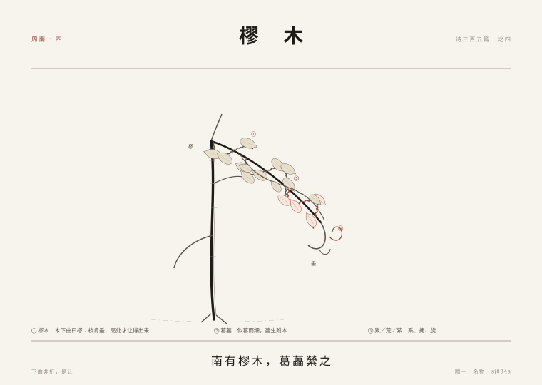
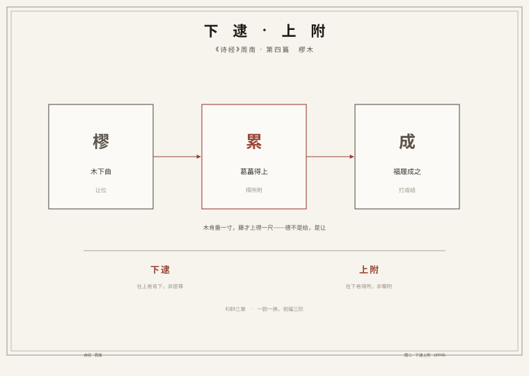

第四篇 樛木
周南 · 之四 SJ004
朗读 · 普通话
依经文正文朗读，句读从文；不配乐、不改速、不加拖腔。全库同一音色（豆包 TTS），非播音员录制。
一 解题
诗三判：
- 谁在说：一位在宴饮或婚聘的场合里，对着「君子」致辞的人。诗不给说话人的身份，只给辞令的口吻——三章一律先说物象，后说祝辞，这是祝嘏之体，不是自述之体。
- 说什么事：一棵树把自己的枝垂下来，于是藤爬得上去。三章说三件事：藤缠上了（累）、藤盖满了（荒）、藤绕到梢头（萦）。对应的三句祝辞：福安之、福大之、福成之。
- 为何编在此：前三篇是夫妇之始、之常、之离。此篇一转，写「上下相因」——在上者肯下，在下者得附。周南到这里，从一对人说到一对关系，再说到一种秩序。
《毛序》：「《樛木》，后妃逮下也。言能逮下而无嫉妒之心焉。」——把樛木读成后妃，把葛藟读成众妾，木下曲而藤得上，是「逮下」。
朱子《诗集传》：以此为兴。「兴者，先言他物以引起所咏之辞也。」又说此诗「后妃能逮下而无嫉妒之心，故众妾美之如此」——与毛序同其骨，取兴体则更明。
本库的看法：毛、朱都把这棵树解释成一个人，本库把这棵树还原成一棵树，再让它自己说话。诗说的是一个可以普遍化的道理：凡在上者肯曲，在下者便能附；凡附得其所，福便随之。谁当这个「在上者」，汉代说后妃，宋代说后妃，今人说凡在上者——三者都通，因为诗只写了那个「曲」的动作，没写那个人的名字。
二 经文
第一章
南有樛木，葛藟累之。樂只君子，福履綏之。
第二章
南有樛木，葛藟荒之。樂只君子，福履將之。
第三章
南有樛木，葛藟縈之。樂只君子，福履成之。
分章：毛传、朱子皆三章，章四句。三章句法全同，只换六个字：累／荒／萦，绥／将／成。这种「只换字」的写法，是《诗》里最见功力的地方——不变的是礼的骨架，变的是礼的进程。
三 韵读
| 一 |
累、绥 |
歌、微合韵 |
| 二 |
荒、将 |
陽部 |
| 三 |
萦、成 |
耕部 |
三章三韵，一章一换。这不是失韵，是变韵：歌微细而柔，陽部开而大，耕部清而收。音随义走——首章是「初附」，声细；次章是「覆满」，声开；末章是「成」，声收。三章连读，能听出一条由细到开、由开到收的弧线。同是祝辞，三章一韵到底会腻；一韵一换，祝福才有三阶。
四 字义名物
- 樛（jiū）——木下曲曰樛。《毛传》。不是弯，是「垂」：枝往下探，把高处让出来。
- 葛藟（lěi）——蔓生之草，似葛而细。《毛传》「藟，葛类」。《说文》：「藟，葛藟也。」今多以为一物，即葛藟。
- 累（léi）——系也。《毛传》。藤初上，是「系」上去。
- 荒——掩也。《毛传》。藤叶既繁，把树盖住，是「掩」。
- 萦——旋也。《毛传》。绕到梢头，打转，是「旋」。
- 只——语助，无实义。「乐只君子」即「乐哉君子」。
- 福履——履，禄也。《毛传》。「福履」是「福禄」，不是「幸福的脚步」。
- 绥——安也。《毛传》。
- 将——大也。《毛传》；郑玄训「扶进」，朱子从毛。本库从「大」，义为「使之厚」。
- 成——就也。《毛传》。终成、圆满。
五 今译
第一章
南边有棵低垂的树，葛藤缠了上去。可乐啊这位君子，福禄安稳他。
第二章
南边有棵低垂的树，葛藤盖满了它。可乐啊这位君子，福禄厚大他。
第三章
南边有棵低垂的树，葛藤绕到了梢头。可乐啊这位君子，福禄成全他。
译注：三章译文有意保留「缠／盖／绕」三字的差别。这三个字不是同义反复，是一条线：藤从「够得着」，到「盖得住」，到「绕到头」。
六 章旨
一章：附之始。木肯垂，藤才够得着。这是「肯下」的第一层——不是施恩，是让位。
二章：附之盛。藤叶把树盖满。此时已分不清谁在扶持谁：树给了高度，藤给了绿。这是「相因」的第二层——施与受开始互文。
三章：附之成。藤绕到梢头，打成结。福亦至此而成。「成」字压尾，全诗无一句转，也无一句叹，是《周南》里少有的、从头到尾都亮的篇。
三章之序，不是重复，是三次「加深」：从系（外），到掩（满），到旋（结）。福之三阶随之：安（定）、大（厚）、成（就）。
七 诗教
- 兴：以樛木下垂、葛藟得上起兴。树垂而藤上，是一幅天然的对偶图——让与被让，同时发生。
- 观：可观两事——「在上者肯下」何以是德（非屈尊，是留位），「在下者得附」何以是福（非攀附，是得所）。
- 群：此篇最宜用于「关系」的教学。今日凡讲「平台与生态」「上位与下位」「师与生」，说的都是这棵树：肯垂一寸，别人就上得一尺。
- 怨：此篇无怨。三百篇里极少有整篇无怨、无惧、无讥的，此其一。它的力量不在批判，在立一个可以照着做的样子。
八 分寸与边界
- 不可把「樛木」读成病木、枯木、被压弯的树。下曲曰樛，是「主动垂」，不是「受压折」。一字之差，全诗的德性就反了：垂是德，折是伤。
- 不可把葛藟读成寄生的可怜物。藤附木而生，是「得所附」，不是「攀附权贵」。读成攀附，就把「相因」读成了「单方面的恩赐」，诗的两头只剩一头。
- 不可把「福履」解作「幸福的脚步」。履训禄，是《毛传》明文；今人望文生义，最易在此处滑走。
- 不可把三章读成「为押韵凑字」。累、荒、萦三字，是三种缠的密度；绥、将、成三字，是福的三阶。若以为可互换，则此诗只剩一张重复的祝辞单。
- 不可把「乐只君子」泛化成「祝好人一生平安」。这是礼乐场合的祝嘏之辞，有场合、有对象、有次第；泛化成人人可用的吉祥话，它就从《诗》掉到了对联。
九 存疑
- 「君子」指谁：《毛序》《诗集传》皆指后妃（或谓指文王），今人多以为泛指在上者、被颂者。诗中无主名，三说并存，本库不指实。
- 「履」是否为「禄」之假借：《毛传》径训「禄」。一说「福履」即「福与禄」二事，一说「履」本字为「礼」之引申（履，所履，即所行）。本库从毛。
- 「将」之训：毛传「大也」，郑笺「扶进也」，朱子从毛，一说通「壮」。三义相近而侧重不同，本库取「大」。
- 葛藟是一物还是二物：毛传「藟，葛类」，似以藟为葛之别种；今多合称一物。图从一物。
- 同卷两见「葛」：《葛覃》之葛，采而治之，成絺綌；《樛木》之葛藟，生而附之，成荫盖。一为用，一为象，同物两写，可见《诗》取物之活。
- 「乐只」之「只」：一说是语已之辞（哉），一说与「旨」通（美）。本库从语助。
十 跨典
- 《周易·谦卦·彖》：「天道下济而光明，地道卑而上行。」——「下济」二字，正是樛木之垂。天道肯下，故光明；地德肯卑，故上行。此篇三章，可作《谦》卦的一首注脚。
- 《论语·里仁》：「德不孤，必有邻。」——木垂而藤至，是「德不孤」的物象版。孤者无所附，故必求邻；有邻者，先自肯下。
- 《小雅·鸳鸯》：「君子万年，福禄绥之。」——与此篇首章末句几乎同辞。同一句祝辞，见于燕飨、见于婚聘，可见这是当时通行的礼辞，《诗》取之入乐，不是独创。
- 《大雅·民劳》：「惠此中国，以绥四方。」——「绥」字同用。一人之福曰绥，四方之治亦曰绥：安的语义，从身到家到天下，是连着的。
- 《孟子·公孙丑上》：「故推恩足以保四海，不推恩无以保妻子。」——「推恩」即「逮下」。孟子的推，是从上往下推；樛木的垂，是从上往下垂。一理两象。
十一 双卡与图
双卡五对：
| 樛（木之曲） |
累（藤之上） |
| 累（系） |
荒（掩） |
| 荒（掩） |
萦（旋） |
| 绥（安） |
将（大） |
| 将（大） |
成（就） |

图一 · 樛木与葛藟 名物图

图二 · 下逮上附 义理图
读图三处：
- 木的下曲：主干末端下垂，末梢还带一个小卷。这一垂不是折断，是「把高处让出来」——图里那一小段弯，就是全诗的德性所在。
- 藤的三态：上段疏系（累），中段密覆（荒），梢头旋绕（萦）。三段的疏密不同，是给「三章不是重复」作证。
- 叶的青：藤叶皆作浅墨，独梢头三片作赭。赭在图中只用于「成」——绕到头的那一刻。